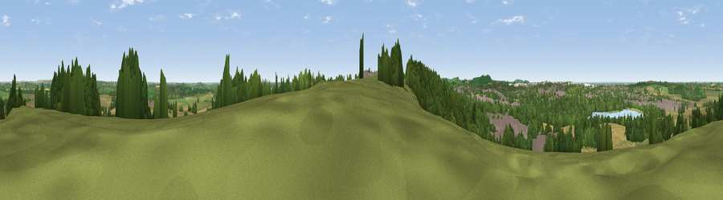

Viewpoint near Norton
#15998 in England · top 14% of its area beats it · near NortonThe view, rendered

A 360° render of this exact spot computed from the terrain model, tree cover and land cover — summer colours, afternoon light, calibrated against photographs of famous viewpoints. Real trees, hedges and buildings will differ in detail.
The panorama
Grey silhouette: terrain skyline in each direction (720 bearings, Earth curvature and refraction included). Dashed green: skyline with trees (+15 m) and buildings (+8 m) as obstacles. Blue strip: how far the ground is visible on each bearing.
Where the view opens
Wedge length = distance to the farthest visible ground on that bearing (vegetation-aware). Rings at 10, 25 and 50 km.
What fills the view
33% cropland · 25% woodland · 24% grassland · 14% built-up · 3% water
Angular shares of the visible panorama (visual magnitude), not map area. Landscape diversity 0.63 (0–1 Shannon).
Key numbers
More beautiful places nearby
The staircase of upgrades: each row has a higher view potential than everything closer. Driving times are estimates from straight-line distance, calibrated against real road routing — check an actual route before setting out.
| Place | Direction | Drive | Score |
|---|---|---|---|
| Viewpoint near Staverton | WSW · 4 km | ~10 min | 63.3 |
| Big Hill - Staverton Clump | WSW · 4 km | ~10 min | 68.4 |
| Viewpoint near Northend | WSW · 22 km | ~37 min | 69.7 |
| Viewpoint near Northend | WSW · 22 km | ~37 min | 70.3 |
| Viewpoint near Radway | SW · 25 km | ~41 min | 71.7 |
| Viewpoint near Ilmington | WSW · 43 km | ~63 min | 72.6 |
| Viewpoint near Meon Vale | WSW · 45 km | ~65 min | 77.0 |
| Viewpoint near Woodhouse Eaves | N · 52 km | ~74 min | 77.7 |
52.26405, -1.13875 · source: screening · position refined by local search. Computed location — check access rights before visiting.